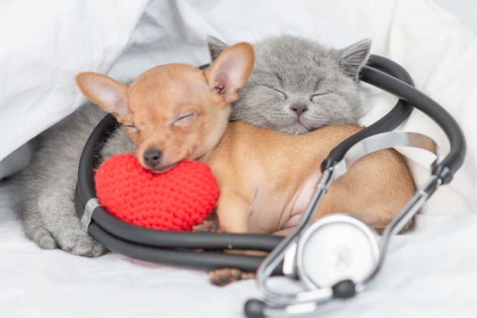

🐾 Clínica Veterinaria en Rancagua
Para los que entendemos que son familia.
Veterinaria San Marcos: Cuidando de tus fieles compañeros con vocación y experiencia desde 2009. Deja atrás las fichas de papel y agenda en línea de forma rápida y segura.
2009
Fundación4.9 ⭐
Confianza+25
Pacientes diarios
Atendidos con amor y profesionalismo